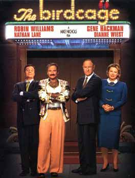
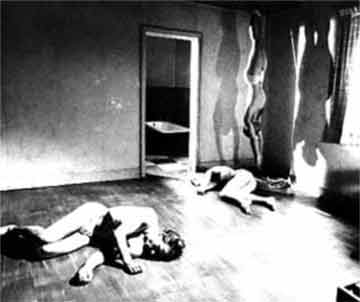
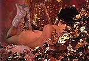
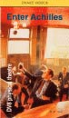
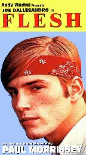
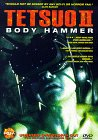
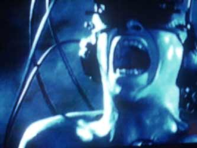
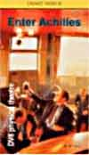

Alle der møder op I Angora får en gratis drink.
| dunstBio 2002 |
| |
| dunst Bio arrangeres af Jørgen og Anderz og vises om onsdagen. Alle der møder op I Angora får en gratis drink. |
| 8. Maj 2002 - Kl. 19:00 |
|  The Birdcage |
| 22. Maj 2002 - Kl. 19:00 - Gratis film for alle. |
 Jubilee
(1977) Jubilee
(1977) Directed by Derek Jarman. Adam Ant's debut. |
|
Kyokon densetsu: utsukushiki nazo (1983) (Beautiful Mystery International: English title) Directed by Genji Nakamura Japans første officielle Homofilm. Se samurai krigerne i træningslejeren - og i sovesalen ! |
| 12. Juni 2002 - Kl. 19:00 - Gratis film for alle. |
| Hej! Vi har fundet tre film frem... To styks af den spanske homoseksuelle filminstruktør Pedro Almodóvar der også har lavet filmen "alt om min mor" der kørte i biografen for et par år siden. Den første film er - Le ley del deseo og den anden er - what have i done to deserve this Begge film er lidt twistede og tit noget med ludere, transer og andet godt...  Den tredie
film er Den tredie
film er Hedwig and the angry inch og var på homo fimfestivallen sidste år og på natfilmfestivallen i år. den handler om en bøsse fra øst Berlin under muren som flygter til amerika med en soldat fra west men desværre unden sin pik som han måtte forlade i øst for at de kunne blive gift. soldaten skrotter ham så og henry starter et punkband- Henry and the angry inch- og tunerer med det i håbet om at blive en stor stjerne... filmen er en slags musical i real life og er blandet med små animationer til sangene. |
| 19. Juni 2002 - Kl. 20:00 - Gratis film for alle. |
| Der er én film og en danseforestilling på programmet. |
DV8: Dead dreams of monochrome men (1988)  criticalopinions "Every image flays a new nerve, and the heights of physical danger and virtuosity to which the dancers rise are matched by the depths of emotion which they have dredged.""This piece of dance, or theatre, is the most shocking and frightening I have ever seen. It chilled me, and appalled me. It should be made compulsory viewing for everyone." Event (South West) "It is perverse, but justified because it rings imaginatively true." |
The Observer Pedro Almodóvar Caballero: What have i done to deserve this ¿Qué he hecho yo para merecer esto?!! (1984) A dysfunctional family in Madrid: Gloria is a cleaning lady, hooked on No-Doze, living in a crowded flat with Antonio, her surly husband, a cabby who adores an aging German singer he used to chauffeur; he's also a forger. One teen son sells heroin, the other sleeps with men. Her mother-in-law keeps bottled water and cupcakes under lock and key, selling them to the family. Two alcoholic writers cook up a plot to sell a manuscript as Hitler's memoirs, if Antonio will transcribe it in Hitler's hand. He won't, so they ask the German singer to intercede. Meanwhile, Gloria has given away one son to a sex-crazed dentist, and grandma picks up a pet lizard. Can this chaos be tamed? |
| 26. Juni 2002 - Kl. 19:00 - Gratis film for alle. |
| PINK NARCISSUS/THE QUEER REVERIES OF JAMES BIDGOOD  In 1971, PINK NARCISSUS rocked the underground film world with its dreamlike homoerotic images. A technicolor fantasia, it is the story of a beautiful, brooding hustler (the lovely Bobby Kendal), who creates a dream world inside his apartment where he acts out his fantasies, from harem boy to roman slave to matador.A major cult classic, PINK NARCISSUS has continued to screen to sold-out audiences around the world. PINK NARCISSUS; James Bidgood, director; 1971; US; 70 minutes http://www.rufusrufus.com/pink.html |
Enter Achilles (DV8) Dansefilm  Performers: Gabriel Castillo, Jordi Cortes Molina, Juan Kruz Diaz de Garaio Esnaola, David Emanuel, Ross Hounslow, Jeremy James, Robert Tannion, DV8A funny, cruel exploration of the male psyche, Enter Achilles is set in a typical British pub, a shabby, nicotine-stained boozer. Pop songs tumble out of the jukebox, there is football on the TV, and the eight men lark around, pint glasses in hand. But their blokeish fun is balanced on a knife-edge of tension, for beneath the mateyness lurks a disturbing undercurrent of paranoia and insecurity exploited and violence covers up vulnerability. |
| 3. Juli 2002 - Kl. 19:00 - Gratis film for alle. |
| Suprise film!!! |
| 17. Juli 2002 - Kl. 19:00 - Gratis film for alle. |
 Andy Warhol's Flesh (1968)Directed by: Paul Morrissey Starring: Joe Dallesandro, Geraldine Smith, Patti D'Arbanville, Barry Brown Joe - always charming, open, innocent - takes to the streets and meets an artist with elaborate and hilarious theories of body worship, a couple of transvestites, a dumb ex-girlfriend and a friend whose armpits have been burned by a flamethrower. Produced at the height of Warhol's Factory years. Recommended for mature audiences. Runtime: 105 Country: USA Language: English |
Tetsuo II: Body Hammer (1992) Directed by Shinya Tsukamoto "Tetsou" this time has the Iron Man transforming into cyberkinetic gun when a gang of vicious skinheads kidnap his son. When the skinheads capture him, they begin to experiment on him...speeding up the mutative process! MPAA: Rated R for bizarre violent images throughout.   Runtime: 93 Country: Japan Language: Japanese www.chez.com/barkokhba/tetsuo2.htm |
| August 2002 - dunst BIO holder sommerferie. |
| Nyt program kommer til September. onsdags film for medlemmer med kulørte og seriøse film fra homoundergrunden og meget mere... |
| 23. Oktober 2002 - Kl. 23:10 - Knud Vesterskov Special |
| medlemskab kr. 50,- (1. gang gratis) 10 kr,- Storskærm |
 Knud
Vesterskov Special Knud
Vesterskov SpecialKortfilm udvalg af Vesterskovs repetoire bøssehuset live hilights fra de fantastiske performances og events i bøssehuset gennem tiden. Vi ser frem til en udsøgt aften i selskab med selveste Knud Vesterskov, der vil være til stede og fortælle om sine film. |
| 20. November 2002 - Kl. 20:00 |
| medlemskab kr. 50,- (1. gang gratis) 10 kr,- Storskærm tema: London life style |
 Enter Achilles(DV8) |
|
Jubilee
(London punk) Directed by Derek Jarman (1977) |
| 18. December 2002 - Kl. 20:00 |
| medlemskab kr. 50,- (1. gang gratis) entré gratis/10 kr,- ved storskærm tema: Queer lifestyle |
 Basquiat Basquiat
directed by Julian Schnabel (1996) |
Queer Life - Dokumentar. |
| 25. December 2002 - Kl. 12:00 og resten af dagen. |
| entré gratis tema: Xmas special |
dunst bio: Tegnefilm + film fra dunst arkiver + surprises (medbring selv !) dunst værksted: Kom og lav dine julegaver om til noget brugbart dunst internetcafé: Send de sidste julehilsner! |
 Celluloid
Closet, The (1995)
Celluloid
Closet, The (1995) Super
8 1/2 (1993)
Super
8 1/2 (1993) Daddy
and the Muscle Academy (1992)
Daddy
and the Muscle Academy (1992) Animal
Factory (2000)
Animal
Factory (2000) Sebastiane
Sebastiane
 Kitami/Kurutta
Butokai
Kitami/Kurutta
Butokai Paris
Is Burning
Paris
Is Burning  Glen or Glenda
Glen or Glenda  Polyester
Polyester